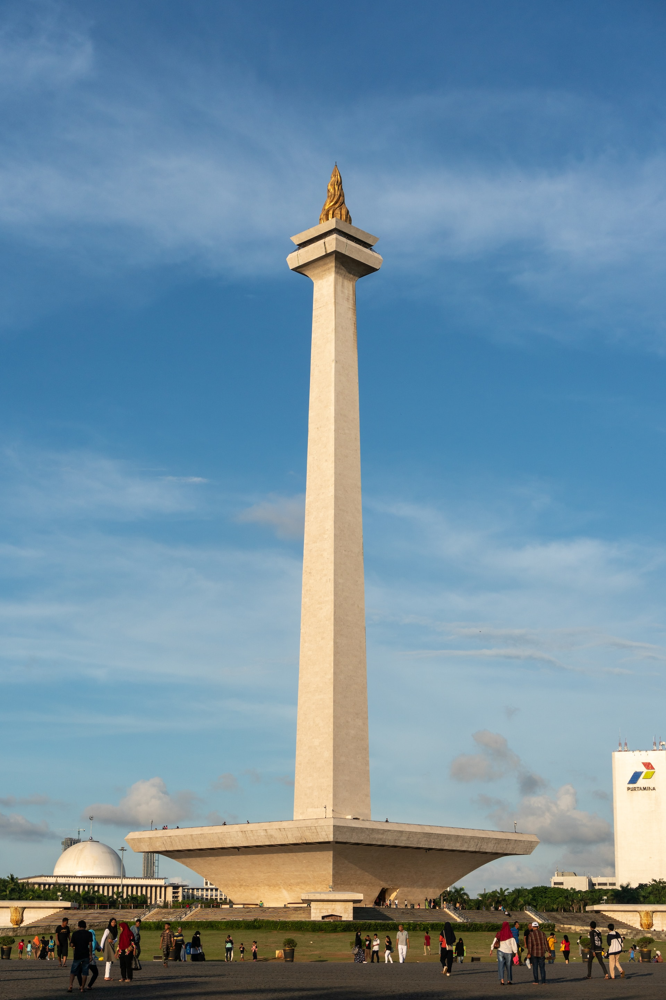
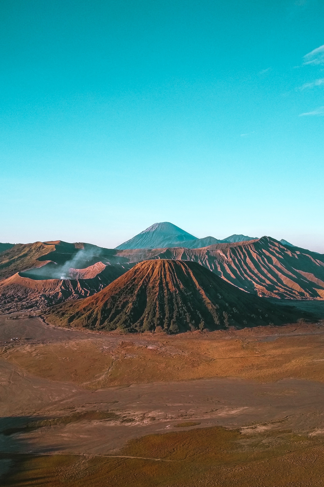

- 
-

-

- 
Daerah Khusus Ibukota Jakarta (DKI Jakarta) adalah ibu kota negara dan kota terbesar di Indonesia. Jakarta merupakan satu-satunya kota di Indonesia yang memiliki status setingkat provinsi. Jakarta terletak di pesisir bagian barat laut Pulau Jawa. Dahulu pernah dikenal dengan beberapa nama di antaranya Sunda Kelapa, Jayakarta, dan Batavia. Di dunia internasional Jakarta juga mempunyai julukan J-Town, atau lebih populer lagi The Big Durian karena dianggap kota yang sebanding New York City (Big Apple) di Indonesia.
Recommended Tourist Atrractions in Jakarta


Surabaya Surabaya memiliki beragam kebuaasli yang masih tetap hidup dan berkembang sampai saat ini, seperti kesenian wayang ludrug, tari remo dan kebudayaan khas jawa lainnya. Selain itu terdapat beberapa adat dan tradisi unik yang masih di lestarikan oleh masyarakat surabaya, seperti Sedekah Bumi, Gulat Okol , Larung Ari-sri, Nakokake, Peningsetan, Pitonan, dan Temu Manten Pegon. Semua budaya dan tradisi tersebut memperkaya keberagaman di kota Surabaya dan menarik perhatian wistawan lokal maupun asing.
Recommended Tourist Atrractions in Surabaya


Bali, sebuah pulau di Indonesia, memiliki kebudayaan yang kaya dan unik. kebudayaan bali meliputi tradisi lisan. manuskrip, adat istiadat, pakaian adat, alat musik tradisional, ritus, kesenian , permainan tradisional, bahasa, olahraga tradisional, dan sukunya. Beberapa contoh kebudayaan lokal Bali : Rumah Adatamengunakan filosofi Tri Hita karena yang artinya harmoni antara manusia dengan manusia, alam, dan tuhannya. Tarian Bali sangat terkenal di dunia, seperti Tari Kecak, Tari Barong, Tari legong, dan Tari Pedet. Pakaian Adat terdiri dari kain sarung dan kebaya , kain sarung di phakia oleh lai - laki sedangkan kebaya di pakai oleh perempuan.
Recommended Tourist Atrractions in Bali


Yogayakarta, juga dikenal sebagai Jogja, adalah kota yang kaya akan budaya dan sejarah. Kota ini terkenal dengan kesenian tradisional Jawa seperti wayang kulit, tari Ramayanan Ballet, dan gamelan. Selain itu, Yogyakarta juga memiliki banyak tempat wisata yang menampilkan ke kayaan budaya dan sejarahnya, seperti Keraton Yogyakarta, Museum Affandi, dan Ramayana Ballet. Dinas Kebudayaan Daerah Istimewa Yogyakarta (DKD) menyediakan informasi - informasi seputar filosofi, agenda, lomba dan event di Daerah Istimemawa Yogyakarta.
Recommended Tourist Atrractions in Yogyakarta

Malang juga terkenal sebagai kota bunga karena banyaknya bunga yang menghiasi kota. Kota Malang dikenal sebagai kota seni karena banyaknya kesenian khas dari kota ini, mulai dari tarian hingga pertunjukan, seperti Tari Topeng Malang.
Recommended Tourist Atrractions in Surabaya